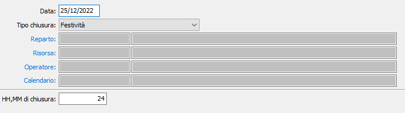

Giorni di chiusura/assenze
La tabella consente di indicare specifici periodi di chiusura.

è sufficiente indicare la data, il tipo di chiusura ed ore e minuti di chiusura; in base al tipo di chiusura (Festività, Chiusura aziendale, chiusura reparto, manutenzione risorsa, ferie operatore) sarà attivato il relativo campo per specificare l'assegnatario della chiusura; le chiusure di tipo Festività o Chiusura aziendale sono da considerarsi valide per tutti.
Ogni volta che si inserisce o si modifica una o più date è poi necessario eseguire la procedura Generazione date periodi.